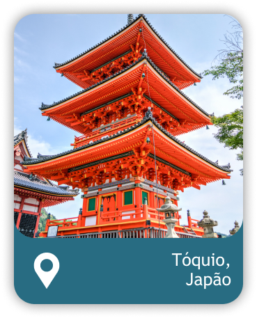

Descubra, explore, viaje!
Sightseer’s Guide, sua fonte definitiva de descobertas turísticas!
Inspire-se, planeje e embarque em grandes aventuras com o Sightseer’s Guide!
_____________
Destinos Populares
_____________
Clique nos nos botões abaixo para saber mais sobre cada país!
-
 ×
×A Coreia do Sul é um país repleto de destinos fascinantes, que oferecem uma
mistura única de história,cultura, natureza deslumbrante e arquitetura
moderna. Aqui está um breve resumo com alguns dos principais pontos turísticos
da Coreia do Sul:1. Palácio Gyeongbokgung - Localizado em Seul, é o maior e mais famoso palácio
da Coreia, oferecendo uma visão da arquitetura tradicional coreana.
2. Templo Bulguksa - Situado em Gyeongju, é um dos principais templos budistas
da Coreia, com belas esculturas e uma atmosfera espiritual encantadora.
3. Ilha de Jeju - Um destino paradisíaco no sul do país, conhecido por suas
paisagens vulcânicas, praias de areia branca, cachoeiras e a famosa estátua
dos Três Deuses.
4. DMZ (Zona Desmilitarizada) - A fronteira entre a Coreia do Sul e a Coreia do
Norte é um destino turístico único, permitindo que os visitantes entendam
melhor a história e as tensões da península coreana.
5. Palácio Changdeokgung - Outro palácio em Seul, é um Patrimônio Mundial da
UNESCO, conhecido por seus belos jardins secretos e arquitetura impressionante.
Esses são apenas alguns dos muitos pontos turísticos incríveis que a Coreia do Sul
tem a oferecer. O país é repleto de maravilhas culturais e naturais que
certamente encantarão os visitantes. -
 ×
×A Itália é um país repleto de rica história, arte deslumbrante, paisagens
deslumbrantes e uma deliciosa gastronomia. Aqui está um breve resumo
destacando alguns pontos turísticos populares na Itália:1. Roma: A capital da Itália abriga o icônico Coliseu, o Fórum Romano, o Vaticano
com a Basílica de São Pedro e a Capela Sistina, além de inúmeras outras
ruínas antigas e monumentos históricos.
2. Florença: Conhecida como o berço do Renascimento, Florença é lar de obras
de arte famosas como o David de Michelangelo e a cúpula da Catedral de
Santa Maria del Fiore. A cidade também abriga a Galeria Uffizi, que exibe uma
vasta coleção de arte renascentista.
3. Veneza: Uma cidade única construída sobre a água, Veneza é famosa por seus
canais românticos, como o Grande Canal, e a praça principal, a Piazza San
Marco, com a impressionante Basílica de São Marcos e o Palácio Ducal.
4. Costa Amalfitana: Localizada na região da Campânia, a costa amalfitana é um
trecho deslumbrante do litoral com encantadoras cidades costeiras, como
Positano, Amalfi e Ravello, rodeadas por penhascos íngremes e águas cristalinas.
5. Pompéia: Uma cidade romana soterrada pela erupção do Monte Vesúvio em 79
d.C., Pompéia é um sítio arqueológico fascinante, onde você pode explorar
ruínas incrivelmente preservadas, como casas, lojas, teatros e banhos.Esses são apenas alguns dos muitos pontos turísticos incríveis que a Itália tem a
oferecer. Cada região do país tem sua própria personalidade e atrações únicas,
tornando a Itália um destino verdadeiramente cativante para os amantes de viagens. -
×
A Noruega é um país conhecido por sua beleza natural deslumbrante, com
paisagens de tirar o fôlego. Aqui está um breve resumo com alguns dos principais
pontos turísticos da Noruega:1. Fiorde de Geiranger: Localizado na região dos fiordes noruegueses, o Fiorde
de Geiranger é um Patrimônio Mundial da UNESCO, com suas montanhas
majestosas, cachoeiras imponentes e águas cristalinas.
2. Bergen: A cidade de Bergen é uma das mais belas da Noruega, com suas casas
coloridas de madeira, o famoso Mercado de Peixes e o funicular Floibanen,
que oferece vistas panorâmicas deslumbrantes da cidade e das montanhas ao redor.
3. Tromsø: Situada no norte do país, Tromsø é conhecida como a "Capital do
Ártico". É um excelente ponto para avistar a Aurora Boreal e também abriga a
Catedral do Ártico e o Museu Polaria.
4. Trondheim: Antiga capital da Noruega, Trondheim é famosa pela Catedral de
Nidaros, um importante local de peregrinação, e pela encantadora área
portuária de Bryggen.
5. Oslo: A capital norueguesa é um destino imperdível, com atrações como o
Museu do Navio Viking, o Museu Munch (que abriga a famosa pintura "O Grito")
e o moderno edifício da Ópera.
Esses são apenas alguns dos pontos turísticos notáveis da Noruega. O país oferece
uma infinidade de belezas naturais, cidades encantadoras e experiências únicas
que certamente encantarão os visitantes. -
 ×
×A Grécia, berço da civilização ocidental, é um destino incrível repleto de
história, cultura e belezas naturais deslumbrantes. Aqui está um breve resumo
com alguns dos pontos turísticos mais famosos da Grécia:1. Acrópole de Atenas: Localizada em Atenas, a Acrópole é um complexo de
construções antigas, incluindo o icônico Partenon. É um símbolo da antiga
civilização grega e oferece vistas panorâmicas da cidade.
2. Santorini: Uma das ilhas gregas mais famosas, Santorini é conhecida por suas
casinhas brancas, cúpulas azuis e deslumbrantes vistas do Mar Egeu. O pôr do
sol em Oia é uma experiência imperdível.
3. Meteora: Situada no centro da Grécia, a região de Meteora é famosa por seus
mosteiros construídos no topo de enormes formações rochosas. A paisagem
única e a aura espiritual tornam Meteora um lugar especial.
4. Delfos: Delfos era um importante centro religioso e de oráculos na Grécia
Antiga. Hoje, os visitantes podem explorar as ruínas do Templo de Apolo, o
Teatro de Delfos e o Museu Arqueológico, que abriga valiosas esculturas e artefatos.
5. Olímpia: Olímpia foi o local onde ocorreram os primeiros Jogos Olímpicos na
antiguidade. Os viajantes podem visitar as ruínas do antigo estádio, o Templo
de Zeus e o Museu Arqueológico de Olímpia.
Esses são apenas alguns dos muitos destinos turísticos fascinantes que a Grécia tem a
oferecer. Cada lugar possui sua própria singularidade e promete uma experiência memorável
para os viajantes que exploram esse país tão rico em cultura e paisagens magníficas. -
 ×
×O Egito é um país repleto de rica história, cultura fascinante e tesouros arqueológicos.
Aqui está um breve resumo dos pontos turísticos mais famosos do Egito:1. Pirâmides de Gizé: Localizadas nos arredores do Cairo, as Pirâmides de Gizé
são um dos marcos mais icônicos do mundo antigo. A Grande Pirâmide de
Quéops, a Pirâmide de Quéfren e a Pirâmide de Miquerinos são impressionantes
testemunhos da grandiosidade do antigo Egito.
2. Esfinge de Gizé: Adjacente às pirâmides, encontra-se a majestosa Esfinge de
Gizé, uma estátua colossal com a cabeça de um faraó e o corpo de um leão.
Ela é uma das obras de arte mais reconhecidas e enigmáticas do Egito.
3. Templo de Karnak: Situado em Luxor, o Templo de Karnak é um complexo de
templos antigos que remonta a cerca de 4.000 anos. É famoso por suas
enormes colunas hipostilas, obeliscos e relevos impressionantes.
4. Vale dos Reis: Localizado perto de Luxor, o Vale dos Reis abriga tumbas
deslumbrantes dos faraós do Novo Reino, como Tutancâmon e Ramsés II. É
uma maravilha arqueológica que revela a crença egípcia na vida após a morte.
5. Rio Nilo: O Rio Nilo é a espinha dorsal do Egito e um local essencial para
explorar o país. Cruzeiros fluviais pelo Nilo oferecem vistas panorâmicas de
antigas cidades, aldeias pitorescas e paisagens deslumbrantes.
Esses são apenas alguns dos muitos pontos turísticos fascinantes que o Egito tem a
oferecer. Cada um deles é uma janela para a rica herança e civilização do antigo
Egito, proporcionando aos visitantes uma experiência única e memorável. -
 ×
×A Holanda é um país conhecido por sua beleza cênica, cultura rica e arquitetura
única. Aqui está um breve resumo dos pontos turísticos mais famosos da Holanda:1. Amsterdã: A capital da Holanda oferece uma mistura encantadora de canais
pitorescos, arquitetura histórica, museus de renome mundial (como o
Rijksmuseum e o Museu Van Gogh) e uma vibrante cena cultural.
2. Moinhos de vento de Kinderdijk: Localizado perto de Roterdã, o Patrimônio
Mundial da UNESCO possui 19 moinhos de vento icônicos, construídos no
século XVIII, que são um símbolo da engenhosidade holandesa na gestão da água.
3. Keukenhof: É o famoso Jardim das Tulipas, situado perto de Lisse. Com uma
área de cerca de 79 acres, oferece uma explosão de cores deslumbrantes na
primavera, com milhões de tulipas e outras flores em exibição.
4. Haia: Como sede do governo holandês e da Corte Internacional de Justiça,
Haia é uma cidade elegante, repleta de palácios, como o Binnenhof, belas
praias, como Scheveningen, e museus interessantes, como o Mauritshuis, que
abriga a famosa pintura "Moça com Brinco de Pérola".
5. Rotterdam: A segunda maior cidade da Holanda é conhecida por sua
arquitetura moderna e inovadora. Destacam-se a Torre Euromast, o famoso
mercado Markthal, o Museu Boijmans Van Beuningen e o moderno e vibrante
bairro de Kop van Zuid.
Esses são apenas alguns dos pontos turísticos notáveis da Holanda. O país oferece
muito mais, desde praias deslumbrantes até encantadoras cidades históricas.
Cada destino possui sua própria beleza e história cativantes, tornando a Holanda
um destino imperdível para os amantes de viagens. -

×
O Japão é um país fascinante que combina uma rica história com uma cultura
vibrante e paisagens deslumbrantes. Aqui está um breve resumo de alguns dos
pontos turísticos mais populares no Japão:1. Tokyo: A capital do Japão é uma metrópole cosmopolita que oferece uma
mistura única de tradição e modernidade. Explore bairros movimentados,
como Shibuya e Shinjuku, visite templos históricos, como o Templo Senso-ji
em Asakusa, e maravilhe-se com a arquitetura futurista da Torre de Tóquio.
2. Hiroshima: Esta cidade histórica ficou conhecida como o local onde a primeira
bomba atômica foi lançada durante a Segunda Guerra Mundial. Hoje, o Parque
Memorial da Paz de Hiroshima é uma visita obrigatória, juntamente com o
Museu Memorial da Paz de Hiroshima.
3. Monte Fuji: O Monte Fuji é o cartão-postal mais icônico do Japão. Você pode
admirar essa montanha sagrada de diferentes pontos de vista e, para os mais
aventureiros, escalar o Fuji-San é uma experiência inesquecível.
4. Osaka: Conhecida por sua vibrante cena gastronômica e seu famoso castelo,
Osaka é uma cidade cheia de energia. Explore o movimentado bairro de
Dotonbori, experimente a culinária local deliciosa e divirta-se nos parques
temáticos, como o Universal Studios Japan.
5. Quioto: Conhecida como a antiga capital do Japão, Quioto é o lar de inúmeros
templos, santuários e jardins tradicionais. Visite o icônico Templo de Kinkaku-ji
(Pavilhão Dourado), o Templo de Fushimi Inari, com seus famosos torii vermelhos, e o belo Templo de Kiyomizu-dera.
Esses são apenas alguns dos muitos pontos turísticos fascinantes que o Japão tem
a oferecer. Cada região do Japão possui sua própria atmosfera única e a promessa
de uma experiência inesquecível. -
×
A França é um país conhecido por sua rica história, cultura vibrante e paisagens
deslumbrantes. Aqui está um breve resumo com alguns dos principais pontos
turísticos da França:1. Torre Eiffel (Paris): Ícone emblemático da França, a Torre Eiffel oferece vistas
panorâmicas incríveis de Paris a partir de seus mirantes.
2. Museu do Louvre (Paris): O Louvre é um dos maiores e mais famosos museus
do mundo, abrigando obras de arte valiosas, incluindo a Mona Lisa e a Vênus de Milo.
3. Catedral de Notre-Dame (Paris): Esta magnífica catedral gótica é uma obra-prima
arquitetônica e um importante marco histórico.
4. Palácio de Versalhes (Versalhes): Localizado nos arredores de Paris, o Palácio
de Versalhes é um impressionante exemplo da arquitetura palaciana e foi
residência dos reis franceses.
5. Riviera Francesa (Nice, Cannes, Saint-Tropez): Com praias deslumbrantes,
luxuosos resorts e um clima ensolarado, a Riviera Francesa é um destino
popular para turistas em busca de sol e glamour.
Esses são apenas alguns dos muitos pontos turísticos maravilhosos que a França
tem a oferecer. Cada região do país possui suas próprias atrações únicas, desde
cidades encantadoras até paisagens deslumbrantes, garantindo uma experiência
rica e diversificada para os visitantes. -
×
A Austrália é um país vasto e diversificado, repleto de pontos turísticos
deslumbrantes. Aqui está um breve resumo com alguns dos principais pontos turísticos da Austrália:1. Sydney Opera House: Um ícone mundialmente famoso, localizado em Sydney,
com sua arquitetura única e impressionante localização à beira-mar.
2. Grande Barreira de Corais: Considerada uma das maravilhas naturais do
mundo, é o maior recife de coral do planeta, com uma abundante vida
marinha. É possível fazer mergulho, snorkeling e passeios de barco para
explorar essa beleza.
3. Uluru (Ayers Rock): Uma imponente formação rochosa no centro da Austrália,
conhecida por suas cores vibrantes que mudam com a luz do sol. É um local
sagrado para os povos indígenas australianos.
4. Great Ocean Road: Uma estrada costeira espetacular que se estende por 243 km
ao longo do litoral sul da Austrália, oferecendo vistas deslumbrantes
de penhascos, praias, formações rochosas e a famosa formação conhecida como
os Doze Apóstolos.
5. Parque Nacional Kakadu: Localizado no Território do Norte, é o maior parque
nacional da Austrália, conhecido por sua rica biodiversidade, paisagens
deslumbrantes, pinturas rupestres aborígines e vida selvagem única, como
crocodilos e pássaros exóticos.
Esses são apenas alguns dos muitos pontos turísticos incríveis que a Austrália tem
a oferecer. Cada região do país possui suas próprias atrações únicas,
proporcionando aos visitantes uma experiência inesquecível.